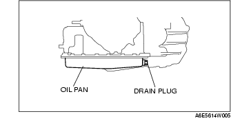

Automatic transaxle fluid (ATF) replacement [FN4A-EL]
- • A hot transaxle and ATF can cause severe burns. Turn off the engine and wait until they are cool before changing the ATF.
1. Remove the oil dipstick.
2. Remove the oil drain plug and washer.

3. Drain the ATF into a container.
4. Install a new washer and the drain plug.
Tightening torque5. Add the specified ATF until ATF level reaches lower notch of dipstick type of ATF through the oil filler tube.
ATF6. Ensure that the ATF level is in the HOT range (65 °C {149 °F}).